Quickguide
The Wave Module
This module is used for the calculation of properties of the emitted radiation by electrons traversing magnetic fields.
First Run
To import unduwave, do:
import unduwave as uw
from pathlib import Path
To run a simple wave simulation:
1wave = uw.wave(undu_mode='undu_easy')
2wave_prog_paras = wave._wave_prog_paras
3wave_prog_paras.res_folder.set(Path("/full/path/to/res/folder"))
4wave_prog_paras.spec_calc.set(0)
5wave.run()
Simple Undulator w/o Endpoles
In the following code a real simulation is run of a simple 3-period undulator with 40 mm period length and an effective magnetic field of 1.4 T. The radiation spectra is computed on a 4x4 cm big screen in 10 m distance from the undulator center between energies of 100 and 500 eV.
1import unduwave as uw
2import pathlib.Path as Path
3
4wave = uw.wave(wave_mode='undu_easy') # Simple undulator model with endpoles
5
6res_folder=Path('path/to/output')
7"""
8Setting Undulator Parameter
9"""
10
11period_length = 0.04 # m
12nperiods = 3
13bEffY = 1.4
14
15undu_paras = wave._undu_paras # getting parameter object
16undu_paras.bEffY.set(bEffY)
17undu_paras.numPeriods.set(nperiods) # we count the number of B-field peaks here - one extra for the end-fields (odd)
18undu_paras.periodLength.set(period_length)
19
20"""
21Setting Program Parameter
22"""
23
24wave_prog_paras = wave._prog_paras
25wave_prog_paras.res_folder.set(res_folder)
26wave_prog_paras.calc_spectrum.set(True)
27wave_prog_paras.nthreads.set(6)
28
29"""
30Setting Spectrometer Parameter
31"""
32
33spectrometer_paras = wave._spectrometer_paras
34spectrometer_paras.spectrum_n_energies.set(10)
35spectrometer_paras.spectrum_min_energy.set(100)
36spectrometer_paras.spectrum_max_energy.set(500)
37spectrometer_paras.spectrum_undu_mode.set(1)
38
39"""
40Setting Screen Parameter
41"""
42screen_paras = wave._screen_paras
43screen_paras.screen_segm_hor.set(30)
44screen_paras.screen_segm_vert.set(30)
45screen_paras.screen_extent_hor.set(40) # pinhole width mm
46screen_paras.screen_extent_vert.set(40) # pinhole height mm
47screen_paras.screen_pos_x.set(10) # [m]
48screen_paras.screen_pos_y.set(0.0) # mm
49screen_paras.screen_pos_z.set(0.0) # mm
50
51"""
52Setting Beam Parameter
53"""
54ebeam_paras = wave._ebeam_paras
55ebeam_paras.beam_en.set(1.722) # [GeV]
56ebeam_paras.current.set(0.3) # [A]
57ebeam_paras.beamSizeHor.set(275e-6) #
58ebeam_paras.beamDiveHor.set(28.1e-6) #
59ebeam_paras.beamSizeVer.set(22.5e-6) #
60ebeam_paras.beamDiveVer.set(6.8e-6) #
61ebeam_paras.espread.set(1e-3) #
62ebeam_paras.emittanceHor.set(7.7e-9)
63ebeam_paras.emittanceVer.set(15.4e-11)
64
65"""
66Run
67"""
68
69wave.run()
70
71"""
72Plot Trajectory
73"""
74traj_x = results.get_result(which='traj_x')
75traj_y = results.get_result(which='traj_y')
76traj_z = results.get_result(which='traj_z')
77
78traj_y.plot_over(x_quant=traj_x,nfig=nfig,nosave=True)
79nfig=traj_z.plot_over(x_quant=traj_x,nfig=nfig,title='Trajectory')
80nfig=traj_z.plot_parametric_3d(x_quant=traj_x,y_quant=traj_y,title='Trajectory',nfig=nfig)
81
82"""
83Plot B-Field
84"""
85By = results.get_result(which='By')
86By.plot_over(x_quant=traj_x,nfig=nfig,nosave=True)
87Bz = results.get_result(which='Bz')
88nfig=Bz.plot_over(x_quant=traj_x,nfig=nfig,title='B-Field')
89
90"""
91Plot Power-Distribution
92"""
93power_z = results.get_result(which='power_z')
94power_y = results.get_result(which='power_y')
95power_distro = results.get_result(which='power_distribution')
96nfig=power_distro.plot_over_3d(x_quant=power_z,y_quant=power_y,nfig=nfig)
{kind=link}
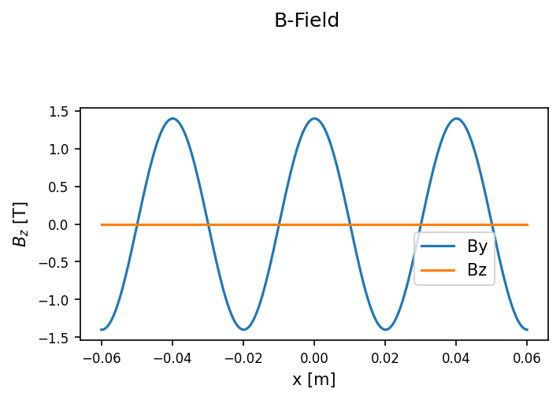
Magnetic field generated by wave.
{kind=link}
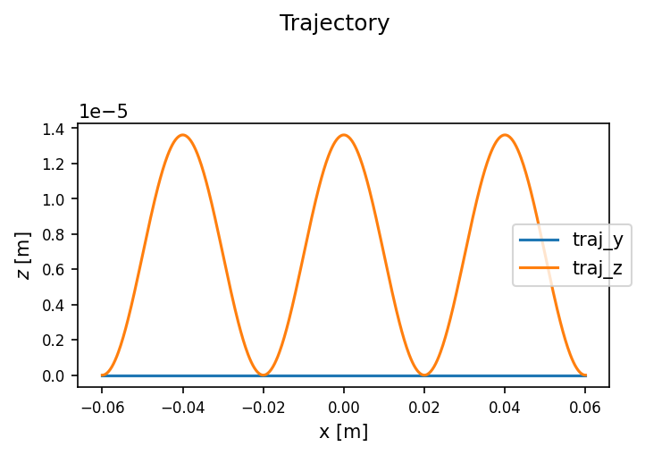
Electron trajectory through the field.
{kind=link}
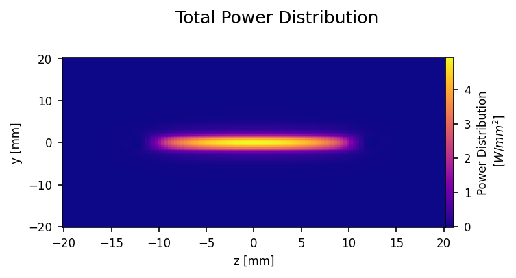
Full radiation power emitted by the electron beam.
General Parameters
Parameter |
Description (Vals) |
Unit |
|---|---|---|
res_folder |
Main result folder |
|
wave_data_res_folder |
Subfolder for raw WAVE-res-data |
|
pics_folder |
Subfolder holding result pics |
|
nthreads |
Number of CPUs to use |
|
calc_energy_fold |
Fold spectrum (energy spread) |
|
calc_emittance |
Switch on/off emittance effects |
|
calc_spectrum |
Switch on/off spectrum calculation |
|
electron_x0/y0/z0 |
Initial pos. of electrons |
[m] |
electron_intermediate_x |
Intermediate long.pos. of electrons |
[m] |
electron_end_x |
Long. end position of electron |
[m] |
electron_vx0/y0/z0 |
Initial unit-velocity of electron |
Parameter |
Description (Vals) |
Unit |
|---|---|---|
beam_en |
Beam Energy |
GeV |
current |
Beam Current |
A |
beamSizeHor |
horizontal beam size |
m |
beamDiveHor |
horizontal beam divergence |
rad |
beamSizeVer |
vertical beam size |
m |
beamDiveVer |
vertical beam divergence |
rad |
espread |
Energy Spread |
% |
emittanceHor |
Horizontal Emittance |
m rad |
emittanceVer |
Vertical Emittance |
m rad |
betaFunctionHor |
Horizontal Beta Function |
m |
betaFunctionVer |
Vertical Beta Function |
m |
circumference |
Ring Circumference |
m |
rdipol |
Bending Radius of Dipoles |
m |
Parameter |
Description (Vals) |
Unit |
|---|---|---|
screen_extent_hor |
Pinhole Width(z) |
mm |
screen_extent_vert |
Pinhole Height(y) |
mm |
screen_pos_x |
Pinhole Position x |
m |
screen_pos_y/z |
Pinhole Position y/z |
mm |
screen_pos_z |
Number of horiz. Segments |
|
screen_pos_y |
Number of vert. Segments |
Parameter |
Description (Vals) |
Unit |
|---|---|---|
spectrum_min_energy |
Lowest Photon Energy |
eV |
spectrum_max_energy |
Highest Photon Energy |
eV |
spectrum_n_energies |
Number of energies |
|
spectrum_undu_mode |
Undulator Mode (0/1) |
|
spectrum_wigg_mode |
Wiggler Mode (0/1) |
Parameter |
Description (Vals) |
Unit |
|---|---|---|
bfield |
magnetic field object |
|
field_type |
one of: [‘By’,’Byz’,’Bxyz’,’bmap’] |
Wave Modes
Parameter |
Description (Vals) |
Unit |
|---|---|---|
bfield |
Field is user-defined |
|
undu_easy |
Harmonic B-Field w/o ends |
|
undu_endp |
Harmonic B-Field w ends |
|
undu_ellip |
Elliptic B-field w/o ends |
Simple Undulators
Parameter |
Description (Vals) |
Unit |
|---|---|---|
unduParameterKY/Z |
K-Value |
|
bEffY/Z |
Effective B-Field |
T |
periodLength |
Period Length |
m |
numPeriods |
Number of Periods |
|
elliptUnduPerShift |
Shift |
% of periodLength |
Simple Undulator with Endpoles
All we have to do to add end poles to the above simple undulator model is to change line 4 to:
4wave = uw.wave(wave_mode='undu_endp') # Simple undulator model with endpoles
{kind=link}
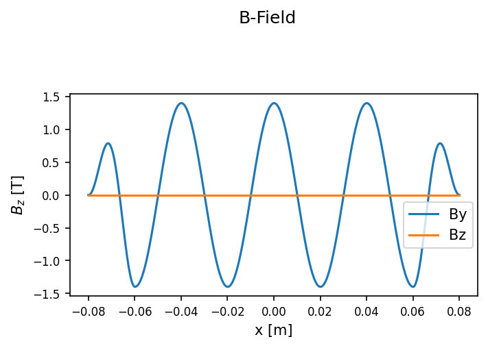
Magnetic field with end poles.
{kind=link}
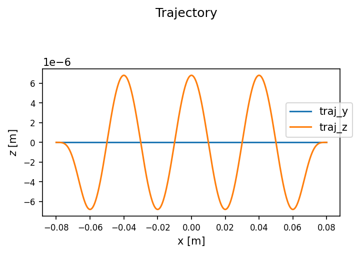
Electron trajectory through the field - centered around 0.
28wave_prog_paras.electron_x0.set(-0.2)
29wave_prog_paras.electron_y0.set(0.0)
30wave_prog_paras.electron_z0.set(-0.0002)
31
32v0=uw.unit_velocity_from_trans_angles(
33 hor_angle=+2e-4,
34 vert_angle=-1.2e-3)
35wave_prog_paras.electron_vx0.set(v0[0])
36wave_prog_paras.electron_vy0.set(v0[1])
37wave_prog_paras.electron_vz0.set(v0[2])
{kind=link}
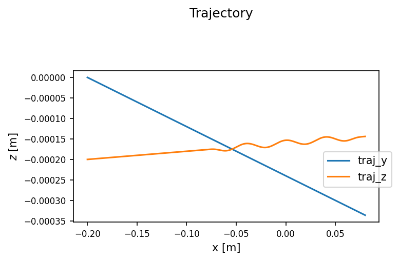
Trajectory with displacement.
{kind=link}
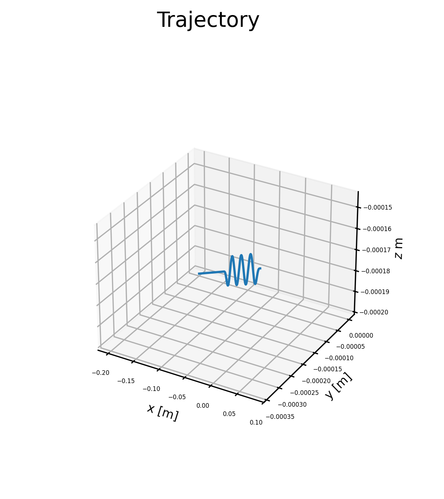
3D-Trajectory with displacement.
Note
Displacements of the initial electron beam will not work with wave_mode=”undu_easy”. This mode will try to expand the magnetic field. In general it is advised to work with self-created magnetic fields. See further below.
Elliptical Undulator
To make a simulation of an elliptical undulator model, we can change the undulator definition part in the simple undulator model - line 4-18:
4wave = uw.wave(wave_mode='undu_ellip')
5wave_prog_paras = wave._prog_paras
6
7"""
8Setting Undulator Parameter
9"""
10
11K_para_z=0.4
12K_para_y=0.8
13
14period_length = 0.0425 # m
15shift = 0.5 # percent of 1 period
16nperiods = 7
17
18undu_paras = wave._undu_paras # getting parameter object
19undu_paras.bEffY.set(b0_y)
20undu_paras.bEffZ.set(b0_z)
21undu_paras.numPeriods.set(nperiods)
22undu_paras.periodLength.set(period_length)
23undu_paras.elliptUnduPerShift.set(shift)
An elliptical undulator is created. The parameters are set - b0y and b0z - the vertical and horizontal B-amplitude. nper - the number of periods, perl_x - the period length and ell_shift the shift of the elliptical undulator in % of the period-length.
{kind=link}
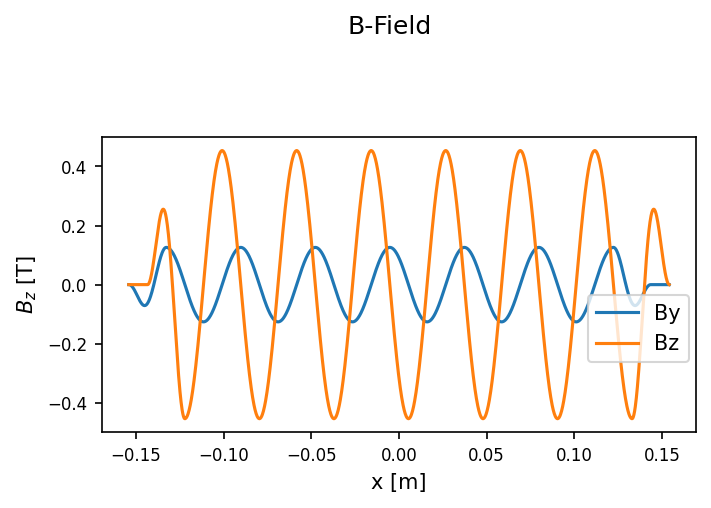
Shift=0.25. Magnetic field for circular mode.
{kind=link}
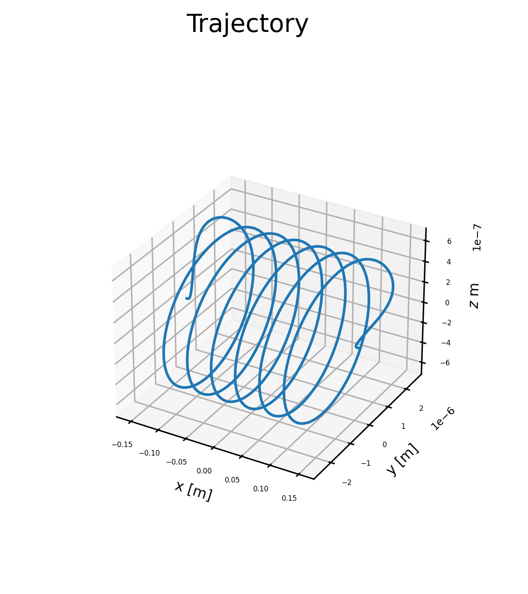
3D-Trajectory for circular mode.
{kind=link}
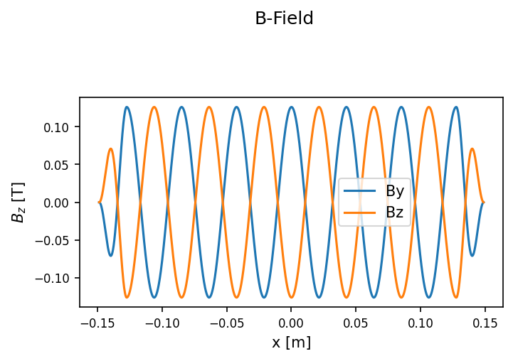
Shift=0.-5. Magnetic field for inclined mode.
{kind=link}
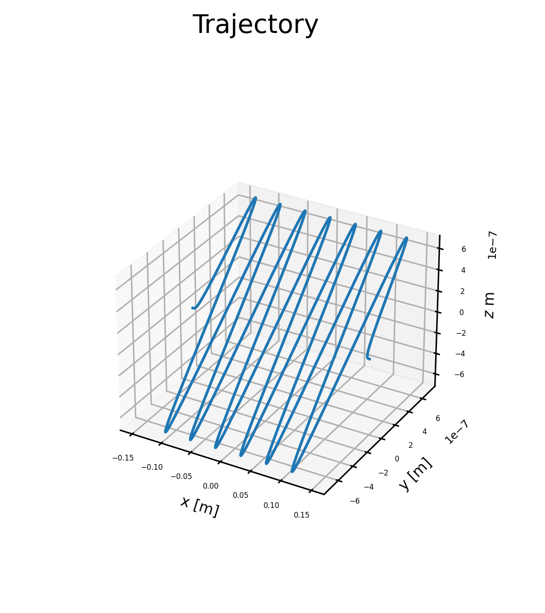
3D-Trajectory in inclined mode.
Note
This mode can only accompany some specific shift values: 0.0, 0.25, 0.5, 0.75 and -0.5. For shift 0 only bEffY is set internally and bEffZ=0. For shift = 0.5 vice versa: bEffY=0 and bEffZ is set to b0_z. If shift =0.25 or 0.75 both bEffY and bEffZ are set to their given values - with differing phase-shifts between both fields, resulting in left-handed or right-handed rotation of the electron beam around the axis. For shift=-0.5 both bEffY and bEffZ are set in phase, resulting in an inclined electron orbit.
User-defined B-Fields
We want to define the on-axis magnetic field through the device. To that end, set up a text file with two columns and no header. The first column is the longitudinal coordinate [mm], and the second is the magnetic field strength [T]. Then add to our old friend, the code for the simple undulator model, beginning in line 4:
4wave = uw.wave(wave_mode='bfield')
5
6"""
7Loading and setting a BField
8"""
9
10# Loading a file with x [mm] and By [T]
11
12bfield=uw.bfield.bfield(
13 unitsXB=[1e-3,1] # setting the units used in the file
14 )
15
16bfield.load_field_from_file(
17 file=Path('path/to/field/file'),
18 fieldMap=False,
19 cols=['x','By'],
20 unduFile = False,
21 radiaFile=False,
22 header=None,
23 skiprows=None,
24)
25
26# make the field known to wave
27
28bfield_paras = wave._bfield_paras # get bfield paras
29bfield_paras.bfield.set(bfield) # set the bfield
30bfield_paras.field_type.set('By') # tell wave which part of bfield to use for simu
1prd_lengths=bfield.find_period_length()
2beffGrid, beff_y, beff_z, longIntrvl=bfield.calc_beff_grid(
3 prd_lngth=prd_lengths[0],
4 )
5beff=beffGrid._g_funs[0,0,0,1]
6undulator=uw.undulator.undulatorCharacterization(
7 bEffY=beff,
8 periodLength=prd_lengths[0],
9 numPeriods=7,
10 bEffZ=0.0,
11 ebeam=ebeam_paras,
12 )
13firstHarmEnergy=undulator.firstHarmEnergyStrong()
14print(f"beff: {beff:.2f} T, periodLength: {prd_lengths[0]:.4f} m, \n firstHarmEnergy: {firstHarmEnergy:.2f} eV")
33 spectrometer_paras = wave._spectrometer_paras
34 spectrometer_paras.spectrum_n_energies.set(101)
35 spectrometer_paras.spectrum_min_energy.set(250)
36 spectrometer_paras.spectrum_max_energy.set(1000)
97 en_fd = results.get_result(which='en_fd')
98 flux_density_onaxis = results.get_result(which='flux_density')
99 nfig=flux_density_onaxis.plot_over(x_quant=en_fd,nfig=nfig)
100
101 flux_dens_distr_ens_loaded = results.find_load_flux_density_distribution(energies=[int(firstHarmEnergy)])
102 fd_y = results.get_result(which='fd_y')
103 fd_z = results.get_result(which='fd_z')
104 for en in flux_dens_distr_ens_loaded :
105 fd = results.get_result(which=f'flux_density_distribution_{en:.2f}')
106 nfig=fd.plot_over_3d(x_quant=fd_y,y_quant=fd_z,file_name=None,nosave=False,nfig=nfig)
The results are:
{kind=link}
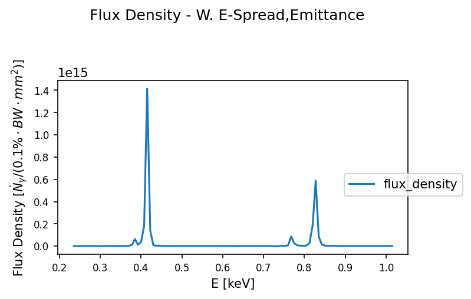
The flux density of the emitted radiation from the loaded field.
{kind=link}
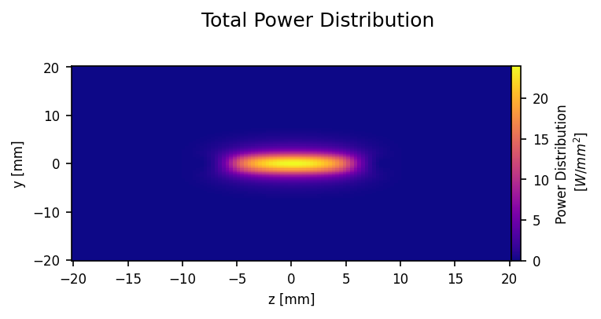
The flux density distribution at the first harmonic energy - 411 eV.
Note
This part of code has to be enclosed inside a ‘if __name__ == ‘__main__’:’ block because the calc_beff_grid function uses multiprocessing.
User-defined B-Maps
4wave = uw.wave(wave_mode='bfield')
5
6"""
7Loading and setting a BField
8"""
9
10bfield=uw.bfield.bfield(
11 unitsXB=[1.0,1.0] # setting the units
12 )
13
14bfield.load_field_from_file(
15 file=Path('path/to/field_map.map'),
16 fieldMap=True,
17 cols=['x','y','z','Bx','By','Bz'],
18 skiprows=range(0,6), # here we ignore the first 6 lines of the file
19 )
20# make the field known to wave
21
22bfield_paras = wave._bfield_paras # get bfield paras
23bfield_paras.bfield.set(bfield) # set the bfield
24bfield_paras.field_type.set('bmap') # tell wave which part of bfield to use for simu
Observation Points
Soon to come. Calculate spectra on custom defined observation point lists.
The undu Module
Creating your first Magnet-Pole Pair
We create a magnet- and pole-block, position them and run the simulation, creating a magnetic field map.
1import unduwave as uw
2from unduwave import undu_blocks
3import pathlib.Path as Path
4
5res_folder_full=Path('/path/to/folder')
6
7"""
8Creating the undu module instance and populate the properties-structure
9"""
10
11undu = uw.undu()
12undu_prog_paras = undu._prog_paras
13undu_prog_paras.res_folder.set(res_folder_full)
14undu_prog_paras.plotGeometry.set(1) # plotting a representation of magnet structure
15undu_prog_paras.create_z_sym.set(0) # do not apply symmetry operations
16undu_prog_paras.create_y_sym.set(0)
17undu_prog_paras.bmap_nz.set(10) # set the magnet map segmentation
18undu_prog_paras.bmap_nx.set(10)
19undu_prog_paras.center_magnet_struct.set(0)
20
21"""
22Create some magnetic objects
23"""
24
25pos_magn=np.array([ 0.0, -15.0, 0.0 ])
26magn_paras=undu_blocks.magParameters(
27 len_x_main=10,
28 len_y_main=20,
29 len_z_main=30,
30 segm_x=2,
31 segm_y=2,
32 segm_z=2,
33 frac_y=1,
34 frac_z=1,
35 chamf=0.3,
36 magnetization=1.0,
37 magn_unit_vec='+x',
38 material_id="pm_rec",
39)
40
41magnet = undu_blocks.undumagBlockObject(
42 center=pos_magn,
43 magnParas=magn_paras,
44 name='MyMagnet',
45 parentName='',
46 )
47
48pos_pole=np.array([ 12.0, -15.0, 0.0 ])
49pole_paras=undu_blocks.magParameters(
50 len_x_main=5,
51 len_y_main=15,
52 len_z_main=25,
53 segm_x=3,
54 segm_y=9,
55 segm_z=5,
56 frac_y=9,
57 frac_z=5,
58 chamf=0.3,
59 material_id="fm_vanadium_permendur",
60)
61
62pole = undu_blocks.undumagBlockObject(
63 center=pos_pole,
64 magnParas=pole_paras,
65 name='MyPole',
66 parentName='',
67 )
68
69"""
70Combine the objects to one data structure
71and make it known to the undu module
72"""
73objs=undu_blocks.undumagObjectList(
74 magnet_blocks=[magnet,pole],
75 name='magnet_pole',
76 parentName='',
77 center=np.array([0.0,0.0,0.0]),
78 )
79undu.set_magnet_objects(magn_objects=objs)
80
81"""
82Run the simulation and retrieve results
83"""
84
85undu.run()
86
87results = undu.get_results()
{kind=link}
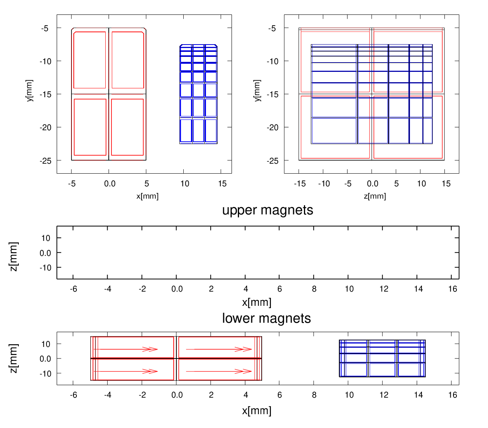
The pole (blue) and magnet (red). Note the effect of frac_y/z on the segmentation of the pole. Also note the flat edges in the upper right plot of magnet and pole - those are chamfers.
In order to see some results, we do come plotting:
88trajx = results.get_result(which='trajx')
89by = results.get_result(which='by')
90bz = results.get_result(which='bz')
91intBy = results.get_result(which='intBy')
92intBz = results.get_result(which='intBz')
93intBy2 = results.get_result(which='intBy2')
94intBz2 = results.get_result(which='intBz2')
95
96zProfile = results.get_result(which='profz')
97ByProfile = results.get_result(which='profBy')
98BzProfile = results.get_result(which='profBz')
99
100bmap = results.get_result(which='bmap')
101
102nfig=0
103by.plot_over(
104 x_quant=trajx,
105 nfig=nfig,
106 nosave=True,
107 clear=True,
108 )
109nfig=bz.plot_over(
110 x_quant=trajx,
111 nfig=nfig,
112 file_name=f'byz.png',
113 plot=False,
114 title=f'B$_y$ and B$_z$',
115 )
116
117intBy.plot_over(
118 x_quant=trajx,
119 nfig=nfig,
120 nosave=True,
121 clear=True,
122 )
123nfig=intBz.plot_over(
124 x_quant=trajx,
125 nfig=nfig,
126 file_name=f'intByz.png',
127 plot=False,
128 title=f'1. Integral of \n B$_y$ and B$_z$',
129 )
130
131intBy2.plot_over(
132 x_quant=trajx,
133 nfig=nfig,
134 nosave=True,
135 clear=True,
136 )
137nfig=intBz2.plot_over(
138 x_quant=trajx,
139 nfig=nfig,
140 file_name=f'int2Byz.png',
141 plot=False,
142 title=f'2. Integral of \n B$_y$ and B$_z$',
143 )
144
145ByProfile.plot_over(
146 x_quant=zProfile,
147 nfig=nfig,
148 nosave=True,
149 clear=True,
150 )
151nfig=BzProfile.plot_over(
152 x_quant=zProfile,
153 nfig=nfig,
154 file_name=f'profileBz.png',
155 plot=False,
156 title=f'Profile of B$_y$ and B$_z$',
157 )
158
159bmap.plot_fld_map(
160 bWhat='By', # "Bx", "By" or "Bz"
161 xPos=None,
162 yPos=0.0,
163 zPos=None,
164 nfig=nfig,
165 filename=res_folder_full/"bymap.png",
166 title="By Map",
167 )
This code organizes the magnetic field values and the first and second field integrals, the field profiles (y-z-plots at x=0) and the created field map. It plots everything together. Note that in the plot_fld_map routine you can specify one coordinate, either xpos,ypos or zpos and will get a 2d plot of the map on the surface that is defined by this coordinate. E.g. if ypos=4 is given, the surface of the plot is defined by y=ypos=4.
{kind=link}
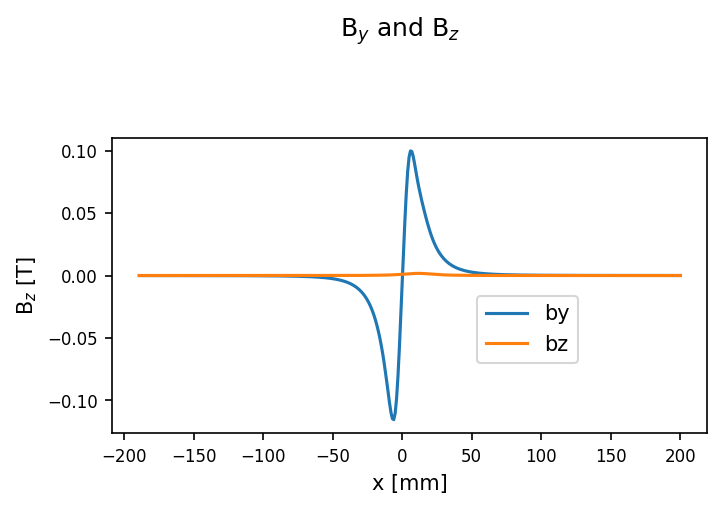
The By(x) and Bz(x) fields.
{kind=link}
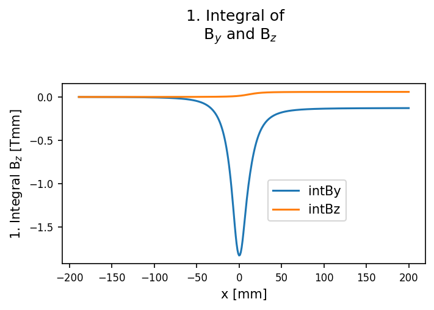
The first integrals of the By(x) and Bz(x) fields.
{kind=link}
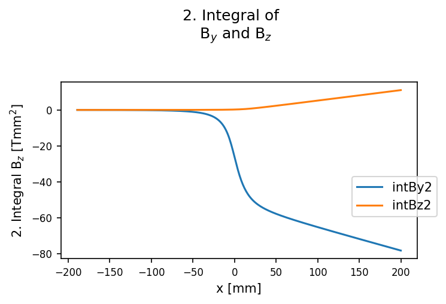
The second integrals of the By(x) and Bz(x) fields.
{kind=link}
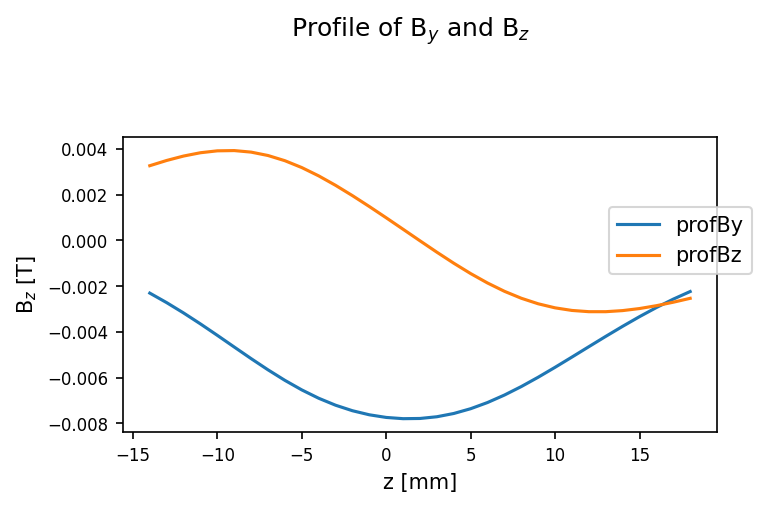
The profiles of By(x=0,y,z) and Bz(x=0,y,z) fields.
{kind=link}
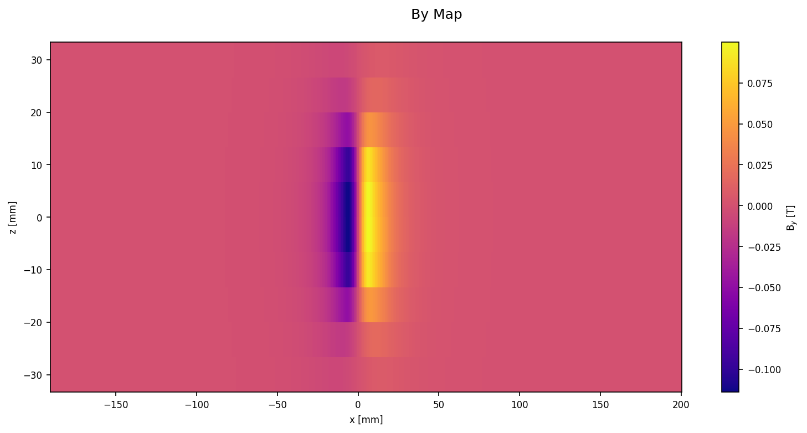
The field map By(x,y=0.0,z)
The Parameter Structures
Parameter |
Description (Vals) |
Unit |
|---|---|---|
material_files_std_folders |
List with material file folders |
|
res_folder |
Path(‘/result/folder/path’) |
|
periodLength |
Period Length |
[m] |
nthreads |
Number of threads (cpu) to use |
|
plotGeometry |
Create a plot file of the geometry |
|
create_x/y/z_sym |
Mirror the structure at x/y/z=0 |
|
center_magnet_struct |
center the magnet structure |
|
magnetCoating |
add CuNi Coating layer around magnets |
[mm] |
bmap_dx |
distance in x-dimension for map |
[mm] |
bmap_nx/y/z |
segmentation of bmap in x/y/z |
|
bmap_x/y/z_min |
minimum grid values for map |
[mm] |
bmap_x/y/z_max |
maximum grid values for map |
[mm] |
calc_force |
do force calculation? |
|
plot_force |
plot force map |
|
force_segm_x/y/z |
segmentation for force calculation |
|
shuffle |
shuffle the voxels during convergence |
|
convergence_iron_residuals |
Convergence Criterion for Ferromagn. |
|
convergence_relative_b |
Convergence Criterion for B-Field |
Calculating Forces and Torques
We add the following code to our Magnet-Pole system in line 84:
1undu.set_force_calc(
2 object=magnet,
3 segmentations=np.array([20,50,50]),
4 )
5
6undu.run()
7results = undu.get_results()
8forces=results._summary['force']
9torques=results._summary['torque']
10print(f"The forces are {forces}, and torques: {torques}")
This tells undu to set-up the force calculation on object magnet, created earlier. Note that the force calculation works by creating a box surrounding the object in question and calculating the forces on the sides of the box.
{kind=link}
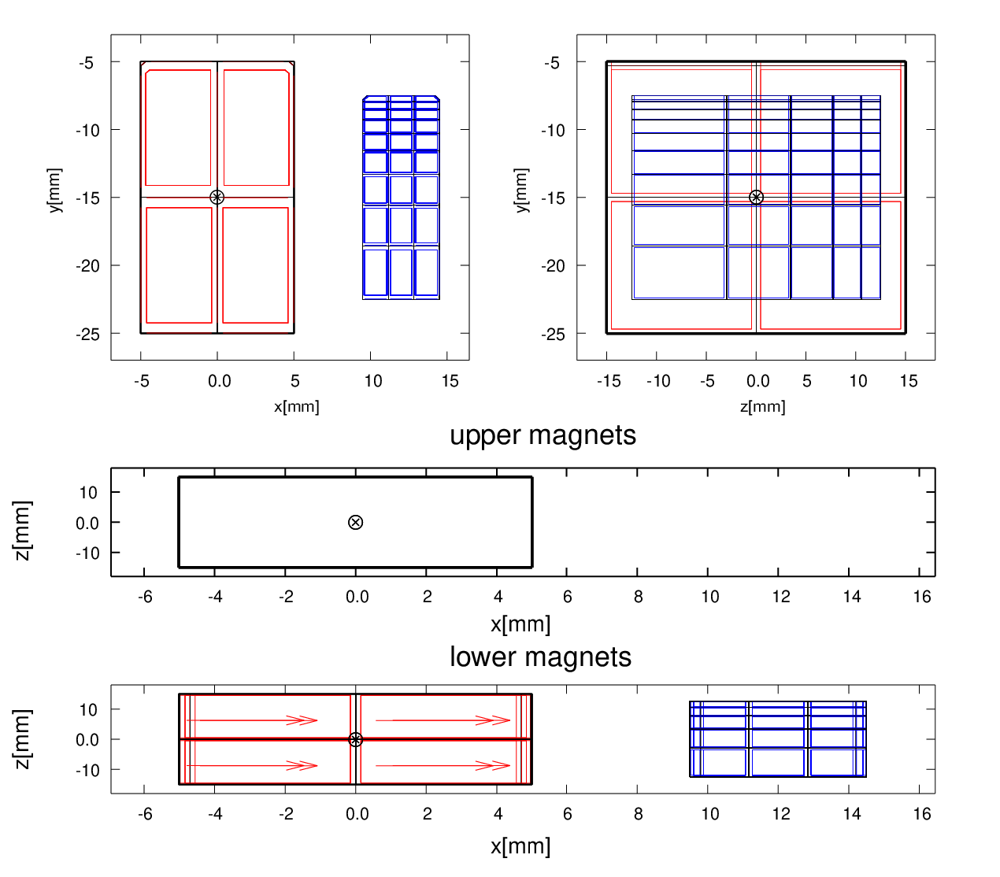
A black box is drawn around the element for which the force and torque is calculated.
Creating Current Carrying Coils
We can create current carrying coils and add them to the magnetic system like so. Replace the lines 25 to 78 in the Magnet-Pole system by:
25pos_magnet=np.array([ 0.0, -15.0, 0.0 ])
26center_coil = np.array([0.0,-20.0,0.0])
27normal_vec = np.array([1.0,0.0,0.0])
28
29"""
30standard orientation for interpretation of the variable names is in
31(0,1,0) direction, so the coils lying in the x-z plane.
32
33coil_len_x - extent of coil in x-direction
34coil_thick - thickness of coil in x-z-plane
35outer_z - outer length of coil in z-direction
36inner_z - inner length of coil in z-direction
37inner_r - the inner curvature of the coils at the edges, the higher, the more circle-like
38height - the extent in y-direction
39segm_v - segmentations
40segm_h=10
41segm_r=10
42filling-the percentage of coil querschnitt filled by coils
43wire_diameter - diameter of one wire
44n_windings=int(height*coil_thick/(math.pi*wire_diameter**2))
45"""
46
47coil_len_x=200
48coil_thick=20
49outer_z=90
50inner_z=outer_z-2*coil_thick
51inner_r=20
52height=5
53segm_v=10
54segm_h=10
55segm_r=10
56filling=0.6
57wire_diameter=1
58n_windings=int(height*coil_thick/(math.pi*wire_diameter**2))
59
60coil = uw.undu_coils.coil(
61 coil_type='RectWindings',
62 current=1.0,
63 center=center_coil,
64 normal_vec=normal_vec,
65 rot_angle=0.0,
66 length=coil_len_x,
67 inner_z=inner_z,
68 outer_z=outer_z,
69 inner_radius=inner_r,
70 height=height,
71 n_vert=segm_v,
72 n_hor=segm_h,
73 n_rad=segm_r,
74 filling = filling,
75 n_windings = n_windings,
76 )
77
78magn_paras=undu_blocks.magParameters(
79 len_x_main=10,
80 len_y_main=20,
81 len_z_main=30,
82 segm_x=2,
83 segm_y=2,
84 segm_z=2,
85 frac_y=1,
86 frac_z=1,
87 chamf=0.3,
88 material_id="pm_rec",
89)
90
91magnObject = undu_blocks.undumagBlockObject(
92 center=pos_magnet,
93 magnParas=magn_paras,
94 name='MyMagnet',
95 parentName='',
96 )
97
98objs=undu_blocks.undumagObjectList(
99 magnet_blocks=[coil,magnObject],
100 name='magnet_coil',
101 parentName='system',
102 api=None,
103 center=np.array([0.0,0.0,0.0]),
104 )
This creates a coil object with all the parameters explained in the code and an magnet. It combines both to a single object and then runs the usual simulations.
{kind=link}
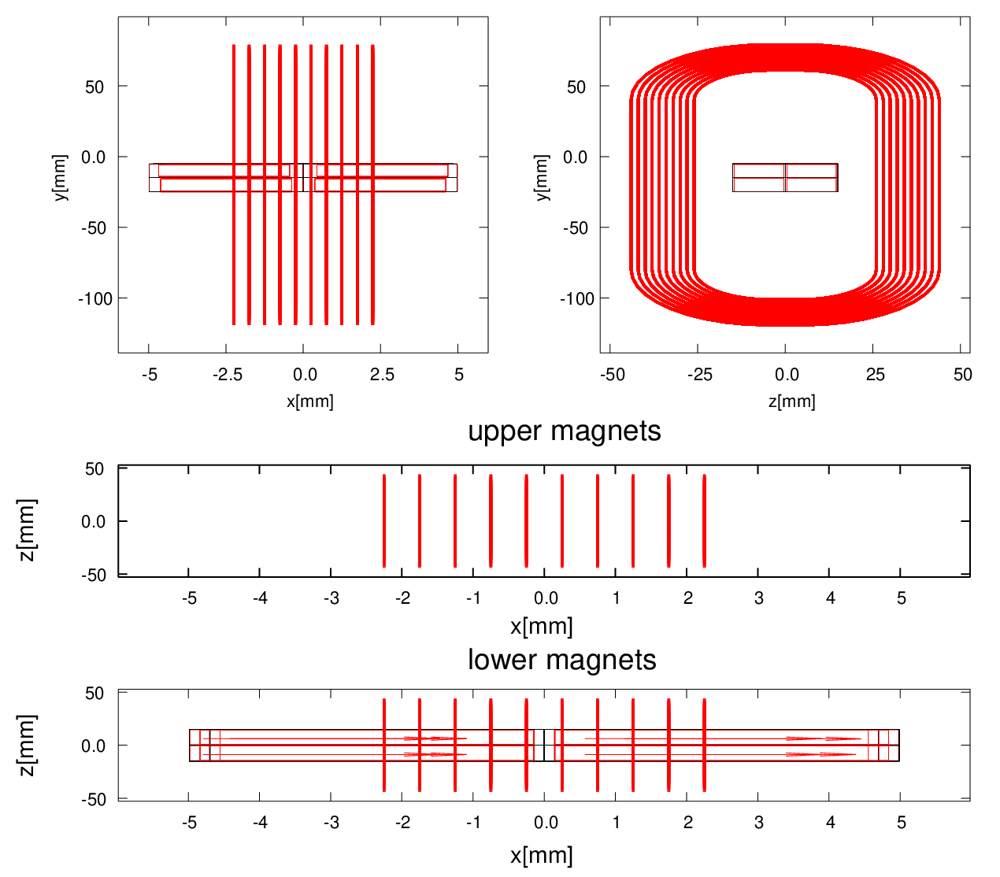
A coil and a magnet.
Kicks And Grids
Here we show how to use some advanced features that have to do with magnetic fields. We calculate the integrals for a field map, the effective magnetic fields and the kicks experienced by the electron beam.
1import unduwave as uw
2import pathlib.Path as Path
3
4wave=uw.wave()
5
6ebeam_paras = wave._ebeam_paras
7ebeam_paras = ebeam_paras.get_std_bessy_III_paras()
8beamEnGeV=ebeam_paras.beam_en()
9
10res_folder_full=Path('path/to/results')
11loadFile=Path('path/to/field_map')
12
13processes=6
14period_length=42.5
15
16"""
17Loading a field map
18"""
19bmap=uw.bfield.bfield(
20 unitsXB=[1.0,1.0] # setting the units
21 )
22
23bmap.load_field_from_file(
24 file=loadFile,
25 fieldMap=True,
26 unduFile = True,
27)
28
29bmap=bmap.center()
30
31"""
32Create a grid for the bfield map. On this grid the field values can be interpolated
33Plot the grid map and calculate integrals, beffs and kicks.
34Those calculations are done with the bfield object, but the results returned
35as grid objects so that they can easily be interpolated
36"""
37unduRepr=bmap.create_grid_interpolation()
38unduRepr.processes=processes
39
40unduRepr.plot_grid_map(
41 indPlot=1, # 0-Bx,1-By,2-Bz
42 zlab='',
43 yPos=0.0,
44 save=True,
45 filename=Path('path/to/picfile'),
46 title=f"By(x,z)",
47 )
48
49firstIntGrid, scndIntGrid=bmap.calc_integrals_grid(
50 intrgnt_limit=400,
51 epsrel=1e-3,
52 epsabs=1e-5,
53 processes=processes,
54 )
55
56for plt in [[firstIntGrid,'first'],[scndIntGrid,'second']]:
57 plt[0].plot_grid_map(
58 indPlot=1,
59 zlab='',
60 xPos=plt[0]._g_xvals[-1], # plot at the last x-value
61 save=True,
62 filename=Path('path/to/picfile'),
63 title=f"By(x=last value,y,z)",
64 )
65 plt[0].write_grid_data(
66 file=Path('path/to/datafile'),
67 cols=['x','y','z',f'{plt[1]}_intgrlBx',f'{plt[1]}_intgrlBy',f'{plt[1]}_intgrlBz'],
68 )
69
70beffs, ys, zs, longIntrvl=bmap.calc_beff_grid(
71 longIntrvl=[-period_length/2.0,period_length/2.0],
72 prd_lngth=period_length,
73 intrgnt_limit=None,
74 n_max = 10,
75 epsrel=1e-3,
76 epsabs=1e-5,
77 processes=processes,
78 )
79
80beffs.plot_grid_map(
81 indPlot=plt[0],
82 zlab='',
83 xPos=period_length,
84 save=True,
85 filename=Path(..'),
86 title=f"Effective $B_{y,eff}$-Map",
87 )
88
89kicksy_h, kicksz_h, pot_map =bmap.calc_kicks_grid(
90 longIntrvl=[-period_length/2.0,period_length/2.0],
91 prd_lngth=period_length,
92 n_max = 10,
93 epsrel=1e-3,
94 epsabs=1e-5,
95 processes=processes,
96 method='harmonic', # harmonic or full
97 beamEnGeV=beamEnGeV, # Beam Energy in GeV, beamEnGeV
98 )
99
100for plt in [[kicksy_h,'Ky'],[kicksz_h,'Kz']]:
101 plt[0].plot_grid_map(
102 indPlot=0,
103 zlab='',
104 xPos=plt[0]._g_xvals[-1], # plot on last x-value kicks(y,z)
105 save=True,
106 filename=Path('...'),
107 title=f"Harmonic {plt[1]}-Map",
108 )
1kicksy, kicksz, pot_map_f, gY,gZ =bmap.calc_kicks_grid(
2 prd_lngth=period_length,
3 intrgnt_limit=400,
4 n_max = 10,
5 epsrel=1e-3,
6 epsabs=1e-5,
7 processes=processes,
8 method='full',
9 beamEnGeV=beamEnGeV, # Beam Energy in GeV, beamEnGeV
10 )
{kind=link}
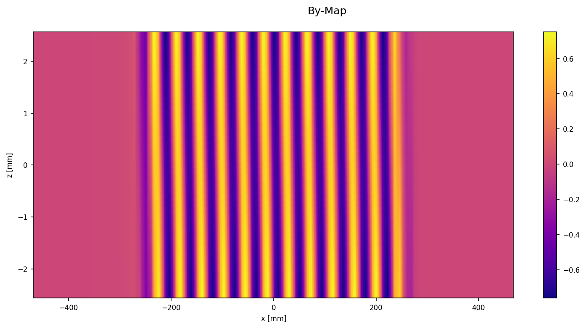
A high resolution field map of a small 42.5 mm undulator in -0.25 shift state.
{kind=link}
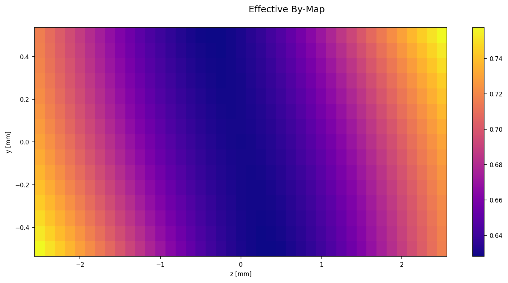
High resolution map of the Effective By(x=end,y,z).
{kind=link}
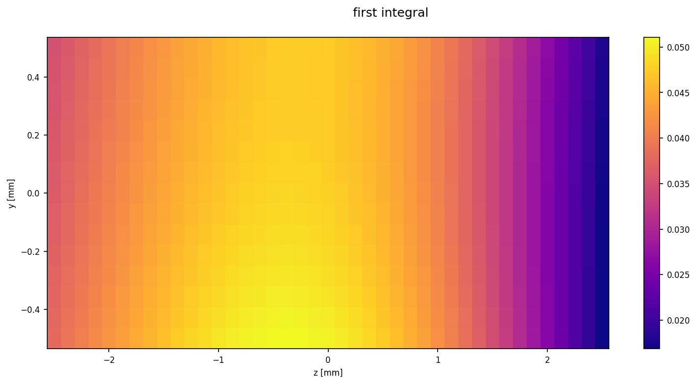
High resolution map of the first integral of By along the axis.
{kind=link}
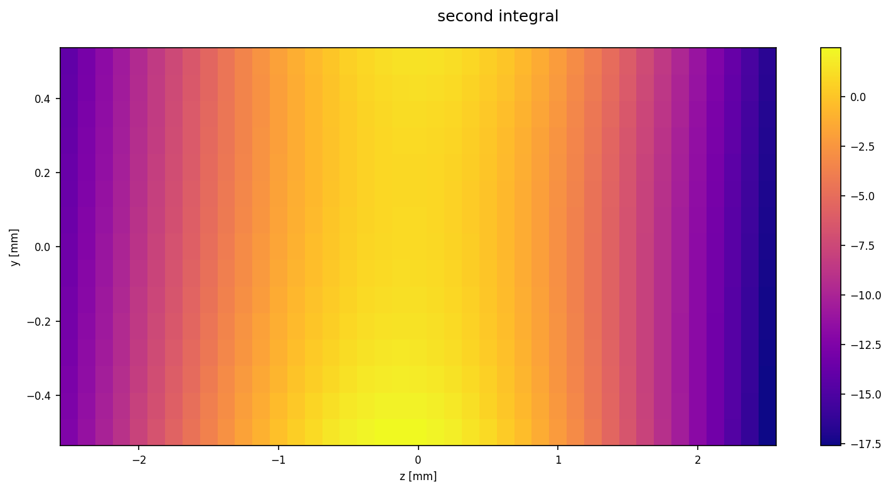
High resolution map of the second integral of By along the axis.
{kind=link}
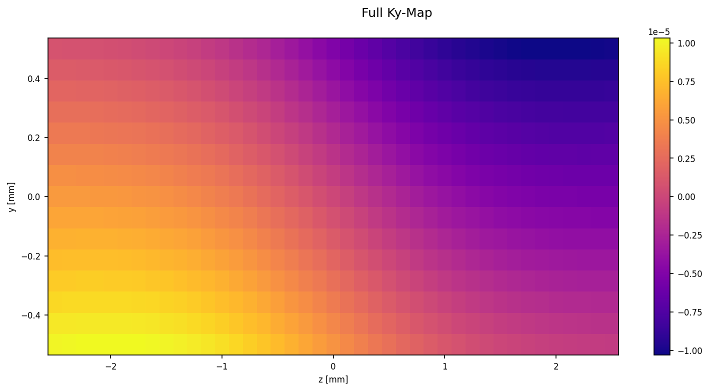
High resolution map of the vertical kick.
Custom Magnetic Materials
Permanent magnets are defined by their susceptibilities parallel to the easy-axis and by their susceptibilities perpendicular to the easy-axis. The material is defined in a file, e.g. my_material.dat, like so
type: magnet
id: super_material
ksi_Par and ksi_Per # parallel and perpendicular (to easy axis) susceptibilities
0.03 0.17
To define a ferromagnetic material, we create a definition file - e.g. mypole.dat - which looks like this
type: pole
id: super_material_pole
H M # [T]
1.0e-30 1.0e-30
0.10000e-08 0.10734e-04
0.20000e-08 0.21468e-04
...
1.9 2.339997
2.2 2.339998
2.5 2.339999
10. 2.34
1import unduwave as uw
2from unduwave import undu_blocks
3
4material_folder=Path("path/to/mat/folder")
5
6undu = uw.undu(undu_mode='from_undu_magns')
7undu_prog_paras = undu._prog_paras
8undu_prog_paras.res_folder.set(Path("path/to/res/folder"))
9undu_prog_paras.create_z_sym.set(0)
10
11mat_folders=undu_prog_paras.material_files_std_folders()
12mat_folders.append(material_folder)
13undu_prog_paras.material_files_std_folders.set(mat_folders)
14
15pos=np.array([ -15.0, 0.0, 0.0 ])
16magn_paras=undu_blocks.magParameters(
17 len_x_main=10,
18 len_y_main=20,
19 len_z_main=30,
20 segm_x=2,
21 segm_y=2,
22 segm_z=2,
23 frac_y=1,
24 frac_z=1,
25 chamf=0.3,
26 material_id="super_material",
27)
28
29magnObject = undu_blocks.undumagBlockObject(
30 center=pos,
31 magnParas=magn_paras,
32 name='MyMagnet',
33 parentName='',
34 api=undu,
35 )
36
37pos=np.array([ 15.0, 0.0, 0.0 ])
38pole_paras=undu_blocks.magParameters(
39 len_x_main=10,
40 len_y_main=20,
41 len_z_main=30,
42 segm_x=2,
43 segm_y=2,
44 segm_z=2,
45 frac_y=1,
46 frac_z=1,
47 chamf=0.3,
48 material_id="super_material_pole",
49)
50poleObject = undu_blocks.undumagBlockObject(
51 center=pos,
52 magnParas=pole_paras,
53 name='MyMagnet2',
54 parentName='',
55 api=undu,
56 )
57
58objs=undu_blocks.undumagObjectList(
59 magnet_blocks=[magnObject,poleObject],
60 name='magnet_sys',
61 parentName='',
62 center=np.array([0.0,0.0,0.0]),
63 )
64
65undu.set_magnet_objects(magn_objects=objs)
66
67undu.run()
In line 11-13 the material_files_std_folders list is updated with a new material folder. Copy your super_material definition files to this folder. Then use the id’s you defined in the material files like in line 26 or 48. Your material definitions are now used for the subsequent simulations.
Creating Undulators
Unduwave comes equipped with infrastructure to create complex undulators in relative simple steps. To see how this works, take a look at the following code.
Note
A general undulator (elliptical) consists of 4 different rows arranged around a central axis (along which the electron-beam travels). The naming convention for the 4 rows used here is based on looking face-on at the undulator in downstream direction. Then there are the lower left (ll), lower right (lr), upper right (ur) and upper left (ul) row. These 4 rows can - in the case of elliptical machines - move longitudinally and independently from each other.
1import unduwave as uw
2from unduwave.unduwave_incl import *
3from unduwave import undu_blocks
4from unduwave import undulatorComponents
5
6"""
7Some general undulator parameters
8"""
9gap = 5.5 # The distance between upper and lower rows [mm]
10nperiods=3 # number of periods
11shift = 0.25 # relative shift in % of period length
12
13period_length=24 # period length [mm]
14glue_slit= 0.102 # longitudinal distance btwn two magnets
15keeper_slit_fm= 0.258 # distance between glued-together magnet pairs
16row_slit=0.795 # distance between lower/upper left and right row
17magnetization=1.58 # the absolute magnetization of magnets
18
19# find the magnet lengths, such that we get the right period length
20slitLenPerPeriod=2*glue_slit+2*keeper_slit_fm
21magnLen=(period_length-slitLenPerPeriod)/4
22
23"""
24Setting general undu parameters
25"""
26undu = uw.undu(undu_mode='from_undu_magns')
27undu_prog_paras = undu._prog_paras
28undu_prog_paras.res_folder.set(Path("/res/folder/path")
29undu_prog_paras.periodLength.set(period_length*1e-3)# undu_prog_paras takes the period_length in [m]
30
31undu_center = np.array([0.0,0.0,0.0]) # machine center
32
33"""
34Create the Periodic Magnet Parameters and Object
35"""
36
37magnParas=undu_blocks.magParameters(
38 len_x_main=magnLen,
39 len_y_main=23.5,
40 len_z_main=23.5,
41 material_id="pm_rec",
42)
43# position magnet (ll) such that it is situated entirely in one quadrant, in accordance with row_slit
44# gap comes later
45llMagnPos=np.array([0.0,-magnParas._len_y_main()/2.0,-magnParas._len_z_main()/2.0-row_slit/2.0])
46magnet = undu_blocks.undumagBlockObject(
47 center=llMagnPos,
48 magnParas=magnParas,
49 pnts=None,
50 name="mag",
51 )
52
53"""
54Create a period consisting of 4 identical magnets - except for their magnetization direction
55
56Not that the period starts not with the magnet but with half a keeper slit.
57"""
58
59mag1=magnet.get_copy(name='m1')
60mag1.move_it(vec=np.array([-period_length/2.0+keeper_slit_fm/2.0+magnParas._len_x_main()/2.0,0.0,0.0]))
61
62mag2=magnet.get_copy(name='m2')
63mag2.move_it(vec=np.array([mag1._center[0]+magnParas._len_x_main()+glue_slit,0.0,0.0]))
64
65mag3=magnet.get_copy(name='m3')
66mag3.move_it(vec=np.array([
67 mag2._center[0]+magnParas._len_x_main()+keeper_slit_fm,0.0,0.0]))
68
69mag4=magnet.get_copy(name='m4')
70mag4.move_it(vec=np.array([mag3._center[0]+magnParas._len_x_main()+glue_slit,0.0,0.0]))
71
72period_objects=[mag1,mag2,mag3,mag4]
73
74# creating the period object
75period=undulatorComponents.period(
76 period_length=period_length*1e-3,
77 objects=period_objects, # list of objects making up one period
78 center=np.array([0.0,0.0,0.0]),
79 name='period1'
80)
81
82# define the magnetizations of the periodic magnets
83periodicMagnetizationSequence=[
84 np.array([ 0.0, magnetization,0.0 ]),
85 np.array([ -magnetization, 0.0,0.0 ]),
86 np.array([ 0.0, -magnetization, 0.0 ]),
87 np.array([ magnetization, 0.0,0.0 ]),
88 ]
89# create the lower left row - it is used as a template to create all other rows too
90row=undulatorComponents.row(
91 pos='ll',
92 period=period,
93 period_length=period_length,
94 center=np.array([0.0,0.0,0.0]),
95 name='row1',
96 nperiods=nperiods,
97 periodicMagnetizationSequence=periodicMagnetizationSequence,
98 )
99# create the full undulator
100undulator=undulatorComponents.undulator(
101 name='myUndu',
102 period_length=period_length,
103 accelerator='myAccelerator',
104 rows=[row],
105 center=np.array([0.0,0.0,0.0]),
106 gap=gap,
107 shift=shift,
108 construct_quadrants=['ll','lr','ul','ur'],
109 api=undu,
110 )
111undu.set_magnet_objects(magn_objects=undulator)
112# Simulate
113undu.run()
Note
The undulator, row, period and unduMagBlock objects are all instances of the undumag.undumagObjectList class. Each of them containing sub-objects which in turn may contain other objects. The undulator objects then is a list of all row objects, which contain the end configurations (see next chapter) and the periods and so on down to the single blocks that may constitute one magnet or pole. Each of those objects holds, among other properties, a “_center” member variable which holds the coordinates of this object. These coordinates are relative with respect to the coordinates of any containing object. So the coordinates of a row, \(c_R\), are relative to the coordinates of the undulator \(c_U\) - if the undulator is not contained in some other strucutre. The total coordinates of the row are then: \(c=c_R+c_U\).
{kind=link}
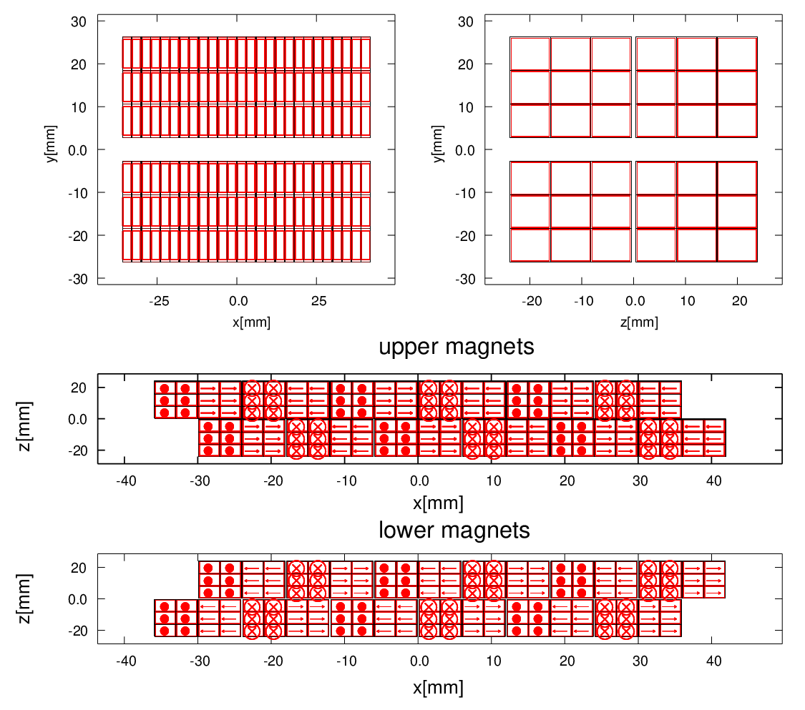
A simple elliptical undulator in 0.25 shift state. No end structures.
{kind=link}
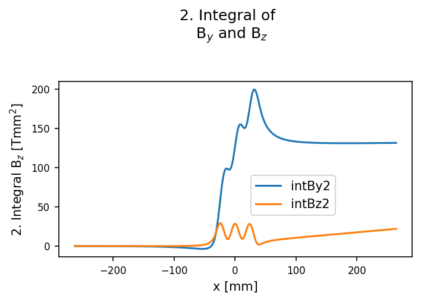
Second field integrals.
Adding End Structures
There is also infrastructure to easily add end-structures to the device. To add, e.g., the upstream end section we can add the following code to line 87 in the undulator creation script.
87len_upStrm=magnParas._len_x_main()*2.5
88
89endMagn1Paras=copy.deepcopy(magnParas)
90endMagn1Paras._len_x_main.set(endMagn1Paras._len_x_main()*0.25)
91
92endMagn2Paras=copy.deepcopy(magnParas)
93endMagn2Paras._len_x_main.set(endMagn2Paras._len_x_main()*0.5)
94
95endMagn3Paras=copy.deepcopy(magnParas)
96endMagn3Paras._len_x_main.set(endMagn3Paras._len_x_main()*0.75)
97
98endmag1Pos_upStrm=copy.deepcopy(llMagnPos)
99endmag1Pos_upStrm[0]=-len_upStrm/2.0+0.5*endMagn1Paras._len_x_main()
100endMagn1_upStrm = undu_blocks.undumagBlockObject(
101 center=endmag1Pos_upStrm,
102 magnParas=endMagn1Paras,
103 name="em1UpS",
104 )
105
106endmag2Pos_upStrm=copy.deepcopy(llMagnPos)
107endmag2Pos_upStrm[0]=endmag1Pos_upStrm[0]+0.5*endMagn1Paras._len_x_main()+\
108 magnParas._len_x_main()*0.5+endMagn2Paras._len_x_main()*0.5
109endMagn2_upStrm = undu_blocks.undumagBlockObject(
110 center=endmag2Pos_upStrm,
111 magnParas=endMagn2Paras,
112 name="em2UpS",
113 )
114
115endmag3Pos_upStrm=copy.deepcopy(llMagnPos)
116endmag3Pos_upStrm[0]=endmag2Pos_upStrm[0]+0.5*endMagn2Paras._len_x_main()+\
117 magnParas._len_x_main()*0.5+endMagn3Paras._len_x_main()*0.5
118endMagn3_upStrm = undu_blocks.undumagBlockObject(
119 center=endmag3Pos_upStrm,
120 magnParas=endMagn3Paras,
121 name="em3UpS",
122 )
123
124upstream_end_objects=[
125 endMagn1_upStrm,endMagn2_upStrm,endMagn3_upStrm
126 ]
127endUpStream=undulatorComponents.endConfig(
128 dist_period=0.0, # a possible gap between end config and the start of the periodic part
129 objects=upstream_end_objects, # list of objects making up one period
130 center=np.array([0.0,0.0,0.0]),
131 name=''
132)
88row=undulatorComponents.row(
89 pos='ll',
90 period=period,
91 downstream_end=endDownStream,
92 upstream_end=endUpStream,
93 period_length=24,
94 center=np.array([0.0,0.0,0.0]),
95 name='row1',
96 nperiods=nperiods,
97 periodicMagnetizationSequence=periodicMagnetizationSequence,
98 )
This adds the up- and downstream ends to the row object which takes over from there.
{kind=link}
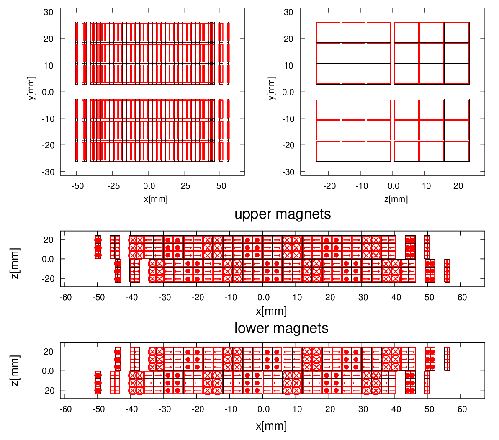
A simple elliptical undulator in 0.25 shift state with end structures.
{kind=link}
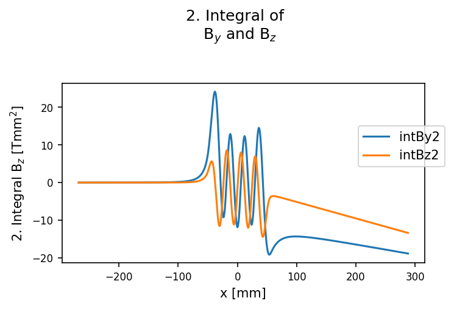
Second field integrals.
Saving and Loading Undulators
1yamlFile=Path('path/to/undu.yaml')
2undulator.writeToParameterFile(file=yamlFile)
3
4undulatorLoad=undulator.loadFromDict(
5 name='myUndu',
6 file=yamlFile,
7 gap=gap,
8 nperiods=nperiods,
9 shift=shift,
10 )
11undu.set_magnet_objects(magn_objects=undulatorLoad)
12
13undu.run()
Undulator YAML Format
Planar Undulators
Note
You find more examples in the git-repository under “scripts/Undumag_Examples/UnduYAML”
1# =============================================================================
2# GENERAL PARAMETERS
3# =============================================================================
4general:
5 origin: [0.0, 0.0, 0.0] # Origin of the device in [X, Y, Z] coordinates
6 coordinate_names: ['X', 'Y', 'Z'] # Coordinate system labels, X-horizontal, Y-vertical, Z-longitudinal - inconsequential until now
7 symmetries: ['X','Y'] # Normal directions to symmetrie planes - geometry definitions are such that full undulator is only created after application of these symmetry operations
8
9# =============================================================================
10# UNDULATOR PARAMETERS
11# =============================================================================
12undulator:
13 name: "u24"
14 type: "Planar" # Undulator type: "APPLE" or "Planar-Hybrid" or 'Planar'
15 accelerator: "BESSYII" # Name of the accelerator
16 periods: 73 # Number of periods in the undulator
17 minimum_gap: 5.5 # Minimum designed gap in mm
18# shim_mp: 0.0 # Gap between magnets and poles in a row (Z) in mm
19# shim_pm: 0.5 # Gap between poles and magnets in a row (Z) in mm
20 shim_m: 0.0 # Shim Between Magnets
21 period_length: 24.0 # Primary period length in mm
22 magnetization_first_magnet: [0.0,0.0,-1.0] # the magnetization vector of first periodic magnet on lower beam
23
24# =============================================================================
25# Geometry Definitions
26# =============================================================================
27geometry_info_file: "u24_geometries.yaml" # the definition file for the geometries
28material_file_folder: "" # if custom material files are used
29
30periodic_magnet: # name of the geometry definition in the geometry_info_file
31 geometry: "periodic_magnet_geo"
32 material_id: 'pm_rec' # "pm_rec" - permanent magnet material, "fm_vanadium_permendur" - ferromagnetic pole material
33 remanence: 1.58 # Block remanence in T (1.21 * 1.344 for cryogenic grade)
1# =============================================================================
2# MAGNET/POLE SHAPE DEFINITIONS
3# =============================================================================
4periodic_magnet_geo:
5 form_type: 'oneSidedClamps' # types: 'square', 'oneSidedClamps', 'cpmuStdPole', 'twoSidedClamps_a/b'
6 main_block_dimensions: [50.0, 35.0, 6] # [width, height, thickness] in mm
7 clamp_cutout: [5.0,12.3,6] # dimensions of clamps to be cut-out of full blocks, upper left corner if object viewed downstream in x-y plane
8 chamf: 0.3 # chamfer in up- and down-stream direction
9 fracs: [1,1]
10 segms: [4,2,4]
1period:
2 sequence: ['periodic_magnet','shim_m','periodic_magnet','shim_m','periodic_magnet','shim_m','periodic_magnet','shim_m']
1end_struct:
2 type: 'standard' # depends on the undulator-type, or "user"
3# custom sequence (up- to downstream) defining the end structure, can contain element names or numbers - interpreted as distances in Z,
4# sequence_up: ['end_magnet_2','shim_mp','end_pole','shim_pm','end_magnet_1','shim_mp']
5# sequence_down: ['shim_mp','periodic_pole','shim_pm','end_magnet_1','shim_mp','end_pole','shim_pm','end_magnet_2']
Elliptical/Apple Undulators
If the “type” field in the “undulator” block is set to “APPLE”, a few fields are different:
1# =============================================================================
2# UNDULATOR PARAMETERS
3# =============================================================================
4undulator:
5 name: "UE30"
6 type: "APPLE" # Undulator type: "Plain_APPLE" or "Compensated_APPLE"
7 accelerator: "BESSYII" # Name of the accelerator
8 periods: 73 # Number of periods in the undulator
9 minimum_gap: 5.5 # Minimum designed gap in mm
10 shim_m: 0.102 # Gap between magnets in a row in mm
11 period_length: 30.0 # Primary period length in mm
12 magnetization_first_magnet: [0.0,0.0,-1.0] # the magnetization vector of first periodic magnet on lower beam
13 row_slit: 0.792
14 keeper_slit: 0.258 # keeper slit for functional magnets, for cm's the slit is determined by the cm- and fm-keepers having the same z-length and their respective geometries
15 dist_fm_cm: 16
16 drop_cm: 0.05
17 compensation: False # shall compensation magnets (cm) be added?
1three_keeper:
2 sequence: ['periodic_magnet',0.0,'periodic_magnet',shim_m,'periodic_magnet']
1rows:
2 ll:
3 sequence: ['upstream_end','period','three_keeper','downstream_end']
4 lr:
5 sequence: ['upstream_end','three_keeper','period','downstream_end']
6 ul:
7 sequence: ['upstream_end','three_keeper','period','downstream_end']
8 ur:
9 sequence: ['upstream_end','period','three_keeper','downstream_end']
Note
All the shape definitions given here define the magnets only in the lower left quadrant of the machine - as always if the system is viewed face on in downstream direction with the orbit down the origin. Internally all parts of the undulator are derived from some magnets defined wrt the lower left quadrant. The other parts of the undulator are - in the plane undulator case - produced by applying the appropriate symmetrie options given in the symmetry-field in the “general” block via the undu module to the simulation. See the example of a simulation run from a yaml file down below. Also in the elliptical case the magnets are defined in the lower left quadrant. However, because of the rows being in general non-symmetric wrt each other and shiftable, the fields cannot be derived by applying symmetry operations to the field of one quadrant. However, the explicit geometric definition of the rows for other quadrants can still be derived by applying symmetrie operations to some row explicitly constructed in the lower left quadrant. All magnetic objects in all quadrants are then used for the relaxations done by undumag to derive actual magnetic fields.
Simulating YAML Files
To actually load and simulate the yaml files just shown, do:
1import unduwave as uw
2from unduwave import undu_list_loading
3
4res_folder=Path("my/res/folder")
5official_yaml_folder=Path("my/yaml/folder")
6official_yaml_file="myfile.yaml"
7
8gap=6
9shift=0.0
10nperiods=3
11
12undu = uw.undu(undu_mode='from_undu_magns')
13undu_prog_paras = undu._prog_paras
14undu_prog_paras.res_folder.set(res_folder)
15undu_prog_paras.plotGeometry.set(1)
16undu_prog_paras.center_magnet_struct.set(0)
17undu_prog_paras.nthreads.set(6)
18
19ule=undu_list_loading.undu_list_element(
20 listFile=official_yaml_file,
21 listFolder=official_yaml_folder,
22 )
23
24undulator=ule.constructUndulator(
25 gap=gap,
26 shift=shift,
27 center=None,
28 nperiods=nperiods,
29 )
30
31undu.set_magnet_objects(magn_objects=undulator)
32
33# it would be good practice to set the periodLength for simulations
34periodLength=undulator.get_period_length(name_hints=['ll'])
35undu_prog_paras.periodLength.set(periodLength*1e-3)
36if 'X' in undulator._symmetries :
37 undu_prog_paras.create_z_sym.set(1)
38if 'Y' in undulator._symmetries :
39 undu_prog_paras.create_y_sym.set(1)
40
41undu.run()
Note
The definitions of the axes is different in the file format than in the undu implementation. This will be changed in the next version. Promissed! Aso the unit is [m] for the undu_prog_paras period length, but mm returned by get_period_length. This will also be fixed soon. Proomisse.
{kind=link}
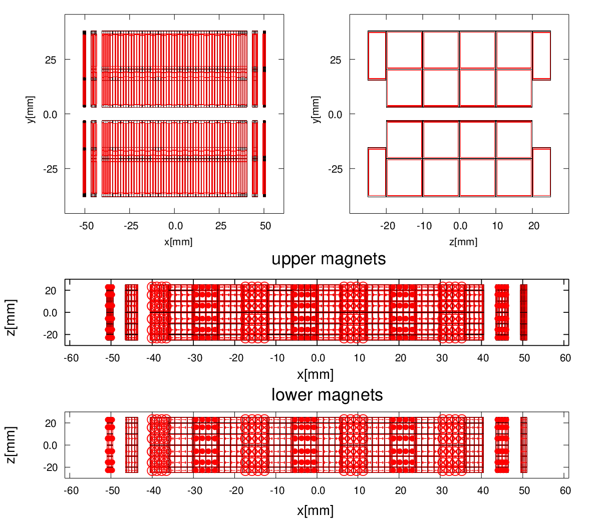
The ue24 constructed via yaml files from above.
Plotting and Results
Options and Examples
results = wave.get_results() # Return Result Object
quant = results.get_result(which=string_identifier)
1results = wave.get_results()
2
3traj_x = results.get_result(which='traj_x')
4traj_y = results.get_result(which='traj_y')
5traj_z = results.get_result(which='traj_z')
6
7traj_y.plot_over(x_quant=traj_x,nfig=nfig,nosave=True)
8nfig=traj_z.plot_over(x_quant=traj_x,nfig=nfig)
9
10nfig=traj_y.plot_over(x_quant=traj_z,nfig=nfig)
11
12By = results.get_result(which='By')
13By.plot_over(x_quant=traj_x,nfig=nfig,nosave=True)
14Bz = results.get_result(which='Bz')
15nfig=Bz.plot_over(x_quant=traj_x,nfig=nfig)
16
17power_z = results.get_result(which='power_z')
18power_y = results.get_result(which='power_y')
19power_distro = results.get_result(which='power_distribution')
20nfig=power_distro.plot_over_3d(x_quant=power_z,y_quant=power_y,file_name=None,nosave=False,nfig=nfig)
21
22en_flux = results.get_result(which='en_flux')
23flux = results.get_result(which='flux')
24nfig=flux.plot_over(x_quant=en_flux,file_name=None,nosave=False,nfig=nfig,loglog=False)
25
26en_brill = results.get_result(which='en_brill')
27brill0 = results.get_result(which='brill0')
28brill0e = results.get_result(which='brill0e')
29brill0f = results.get_result(which='brill0f')
30brill0ef = results.get_result(which='brill0ef')
31brill0.plot_over(x_quant=en_brill,nfig=nfig,nosave=True,loglog=False)
32brill0e.plot_over(x_quant=en_brill,nfig=nfig,nosave=True,loglog=False)
33brill0f.plot_over(x_quant=en_brill,nfig=nfig,nosave=True,loglog=False)
34nfig=brill0ef.plot_over(x_quant=en_brill,nfig=nfig,loglog=False)
35
36en_fd = results.get_result(which='en_fd')
37flux_density_onaxis = results.get_result(which='flux_density')
38nfig=flux_density_onaxis.plot_over(x_quant=en_fd,nfig=nfig,loglog=False)
39
40flux_dens_distr_ens_loaded = results.find_load_flux_density_distribution(energies=[500])
41fd_y = results.get_result(which='fd_y')
42fd_z = results.get_result(which='fd_z')
43for en in flux_dens_distr_ens_loaded :
44 fd = results.get_result(which=f'flux_density_distribution_{en:.2f}')
45 nfig=fd.plot_over_3d(x_quant=fd_z,y_quant=fd_y,file_name=None,nosave=False,nfig=nfig)
1undu.run()
2results = undu.get_results(add=add)
3
4trajx = results.get_result(which='trajx')
5by = results.get_result(which='by')
6bz = results.get_result(which='bz')
7intBy = results.get_result(which='intBy')
8intBz = results.get_result(which='intBz')
9intBy2 = results.get_result(which='intBy2')
10intBz2 = results.get_result(which='intBz2')
11
12zProfile = results.get_result(which='profz')
13ByProfile = results.get_result(which='profBy')
14BzProfile = results.get_result(which='profBz')
15
16bmap = results.get_result(which='bmap')
17
18nfig=0
19by.plot_over(
20 x_quant=trajx,
21 nfig=nfig,
22 nosave=True,
23 clear=True,
24 )
25nfig=bz.plot_over(
26 x_quant=trajx,
27 nfig=nfig,
28 plot=True,
29 title=f'B$_y$ and B$_z$',
30 )
31
32intBy.plot_over(
33 x_quant=trajx,
34 nfig=nfig,
35 nosave=True,
36 clear=True,
37 )
38nfig=intBz.plot_over(
39 x_quant=trajx,
40 nfig=nfig,
41 plot=False,
42 title=f'1. Integral of \n B$_y$ and B$_z$',
43 )
44
45intBy2.plot_over(
46 x_quant=trajx,
47 nfig=nfig,
48 nosave=True,
49 clear=True,
50 )
51nfig=intBz2.plot_over(
52 x_quant=trajx,
53 nfig=nfig,
54 plot=False,
55 title=f'2. Integral of \n B$_y$ and B$_z$',
56 )
57
58ByProfile.plot_over(
59 x_quant=zProfile,
60 nfig=nfig,
61 nosave=True,
62 clear=True,
63 )
64nfig=BzProfile.plot_over(
65 x_quant=zProfile,
66 nfig=nfig,
67 plot=False,
68 title=f'Profile of B$_y$ and B$_z$',
69 )
Plotting 2D Results
Each quantities data is saved under quantity._data. Each quantity has a number of plotting routines. To do a simple 2D plot, you can do:
1results = wave.get_results() # Return Result Object
2traj_x = results.get_result(which='traj_x')
3By = results.get_result(which='By')
4By.plot_over(x_quant=traj_x)
This plots the y-component of the B-field over the x-coordinate.
Merge Plots
To plot y and z components together, do:
1nfig=0 # telling it to start with figure number 0
2results = wave.get_results() # Return Result Object
3traj_x = results.get_result(which='traj_x')
4By = results.get_result(which='By')
5By.plot_over(x_quant=traj_x,nfig=nfig,nosave=True)
6Bz = results.get_result(which='Bz')
7nfig=Bz.plot_over(x_quant=traj_x,nfig=nfig,title='B-Field')
This will plot By and Bz into the same window, setting a title and returning the new nfig number which can be used in the next plotting command as an argument.
Log Plots
To plot logarithmic axes, do:
1nfig=0 # telling it to start with figure number 0
2results = wave.get_results() # Return Result Object
3en_flux = results.get_result(which='en_flux')
4flux = results.get_result(which='flux')
5nfig=flux.plot_over(x_quant=en_flux,file_name=None,nosave=False,nfig=nfig,loglog=True)
Parametric Plots
To do parametric plots, do:
1nfig=0 # telling it to start with figure number 0
2results = wave.get_results() # Return Result Object
3traj_x = results.get_result(which='traj_x')
4traj_y = results.get_result(which='traj_y')
5traj_z = results.get_result(which='traj_z')
6
7traj_y.plot_over(x_quant=traj_x,nfig=nfig,nosave=True)
8nfig=traj_z.plot_over(x_quant=traj_x,nfig=nfig,title='Trajectory')
9nfig=traj_z.plot_parametric_3d(x_quant=traj_x,y_quant=traj_y,title='Trajectory',nfig=nfig)
3D Plots
To do 3D plots, do:
1nfig=0 # telling it to start with figure number 0
2results = wave.get_results() # Return Result Object
3power_z = results.get_result(which='power_z')
4power_y = results.get_result(which='power_y')
5power_distro = results.get_result(which='power_distribution')
6nfig=power_distro.plot_over_3d(x_quant=power_y,y_quant=power_z,file_name=None,nosave=False,nfig=nfig)
Each call to plot_over_3d creates a 3D plot, a heat plot and plots of interpolated data.
{kind=link}
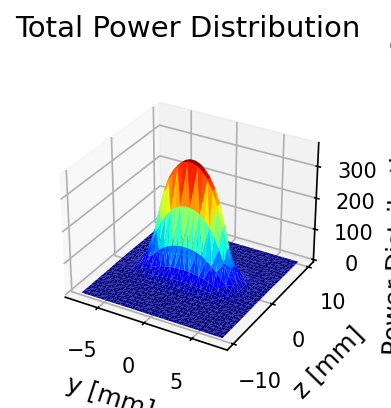
Original 3D-plot of a power distribution.
{kind=link}
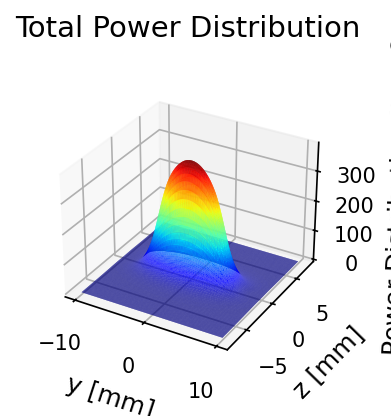
Interpolated 3D-plot of the previous power distribution.
{kind=link}
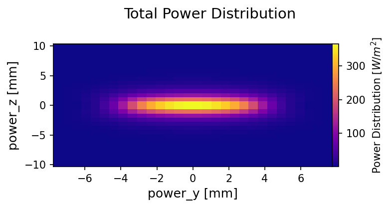
Original heat map of the above power distribution.
{kind=link}
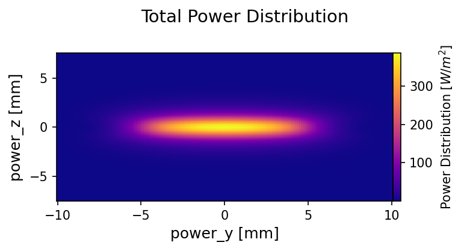
Interpolated heat map of the above power distribution.
Plot Flux Density Distributions
To plot the flux density distribution, you have to specify the energy at which you want to do this.
1nfig=0 # telling it to start with figure number 0
2results = wave.get_results() # Return Result Object
3flux_dens_distr_ens_loaded = results.find_load_flux_density_distribution(energies=[460,504])
4for en in flux_dens_distr_ens_loaded :
5 fd = results.get_result(which=f'flux_density_distribution_{en:.2f}')
6 nfig=fd.plot_over_3d(x_quant=fd_y,y_quant=fd_z,file_name=None,nosave=False,nfig=nfig)
The call to find_load_flux_density_distribution searches for the closest distribution files to the energies specified and returns the corresponding energies it found as a list. From this returned list, the corresponding flux_densitie quantities can be returned and then plotted.